Try a new hair colour before you commit.
Lustra finds the hair in your photo, then lets you test natural shades, bold colours, ombre, balayage and highlights. It is free, there is no account, and your photos never leave your device.
Not on the App Store yet
There is no download link yet. Questions are welcome on the support page.
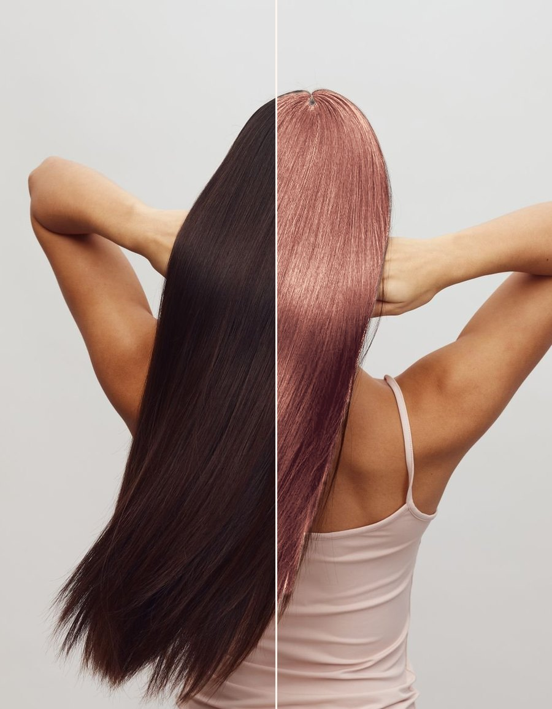
OriginalColour overlayOne photo, as many colours as you like
Lustra's compare grid shows several colours on the same photo at once, so you can choose before you export. One grid is one picture and one ad.
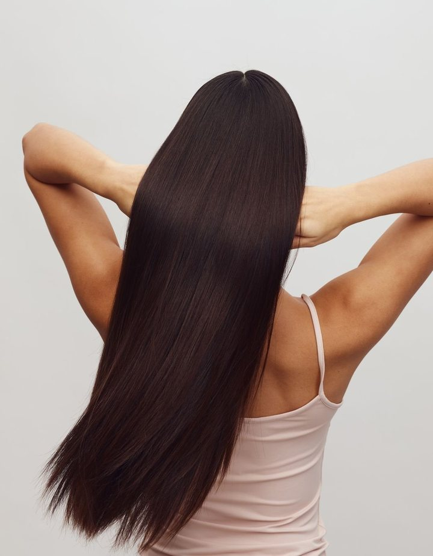
Original 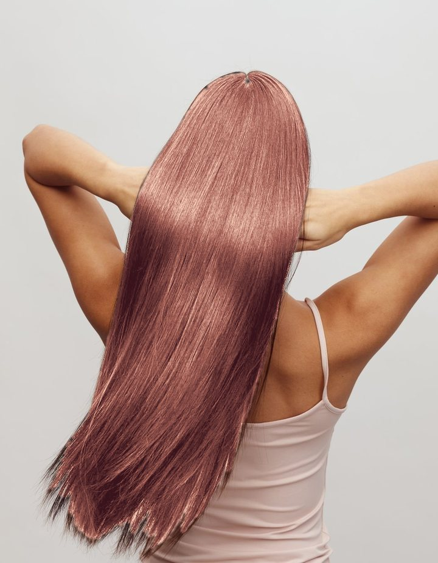
Rose gold 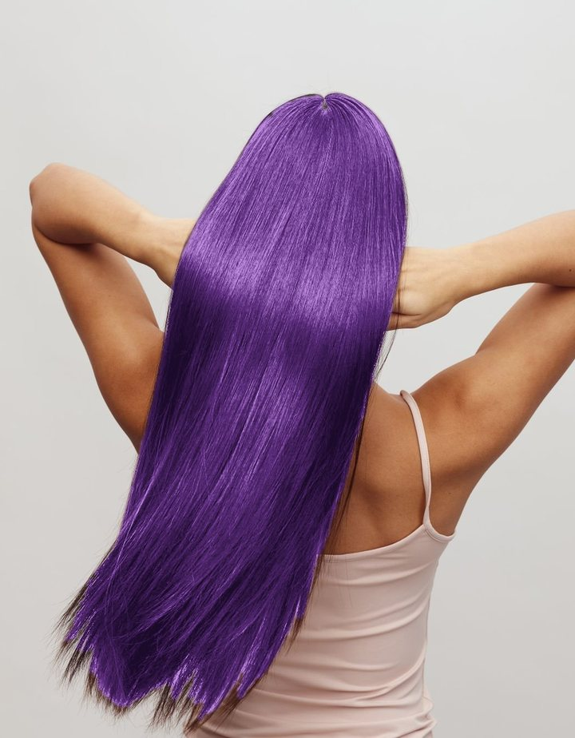
Plum 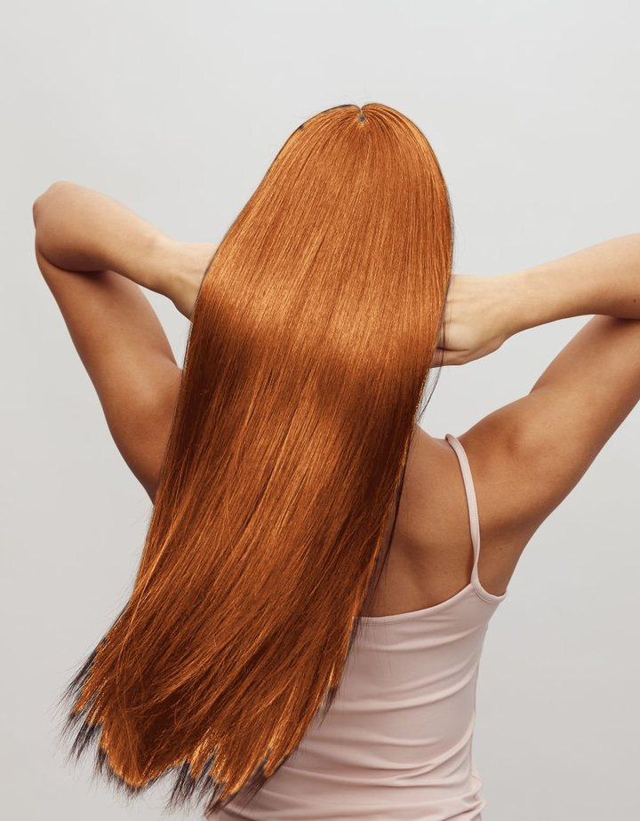
Copper
Illustration: a plain colour overlay added to one sample photo for this page. These are not screenshots from the app, and the app's result will differ.
Start from your own photo, or one of ours
Lustra comes with sample photos so you can try it right away. These are some of them. Each one shows hair from behind, so nobody can be identified.
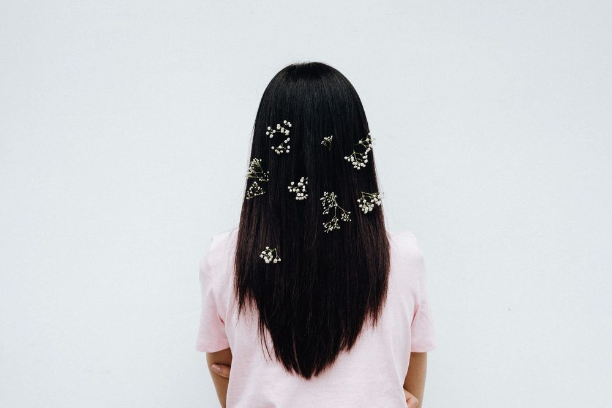
Long BlackSleek black. Try a rich fashion colour. 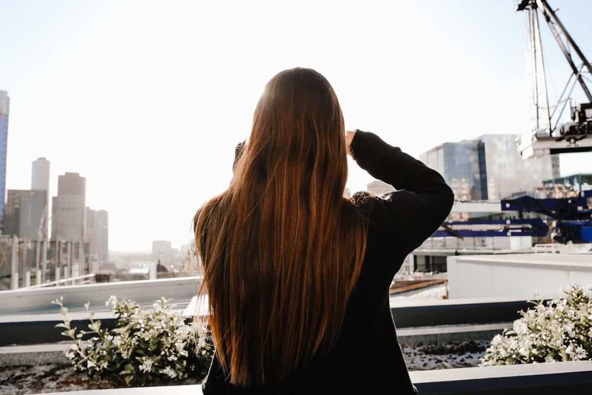
Auburn LengthsWarm and straight. Try deeper or brighter shades. 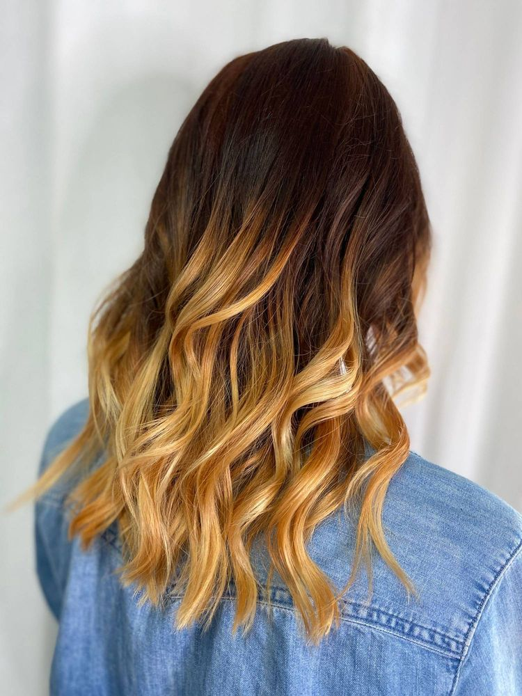
Golden OmbreDark roots into gold. A natural place to try ombre. 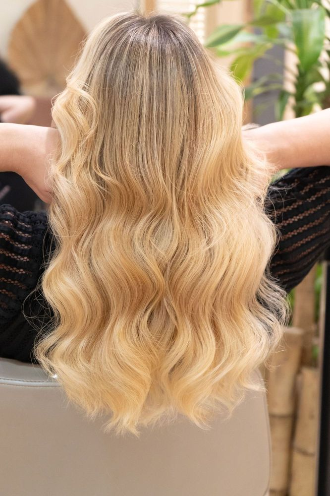
Blonde WavesLight and wavy. Try pastel and fashion colours. 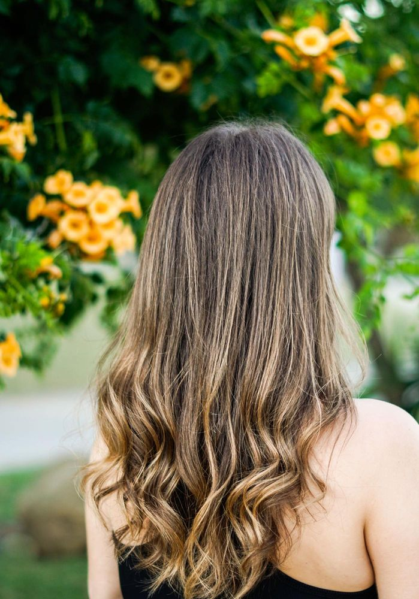
Balayage WavesSoft sun-kissed ends. Try balayage and highlights. 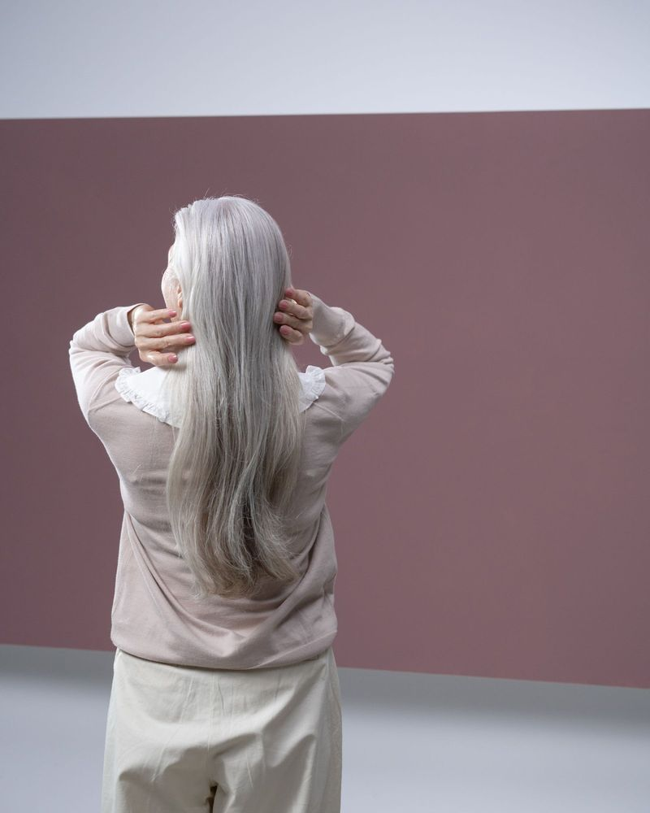
Long SilverLong and silver. Try cover and bold colour. 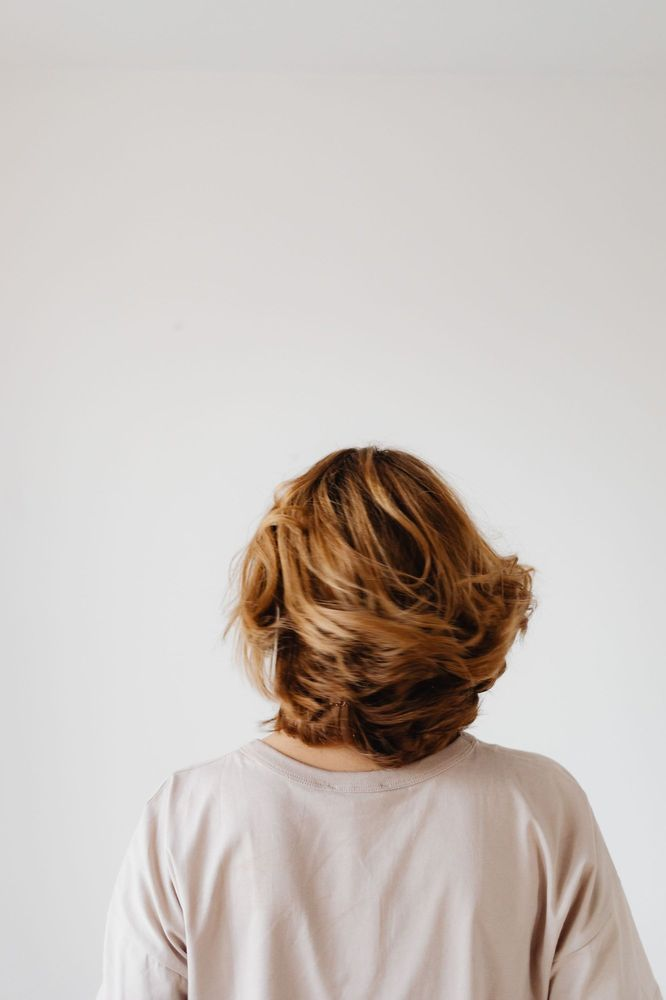
Copper BobShort and copper. Try a root shadow. 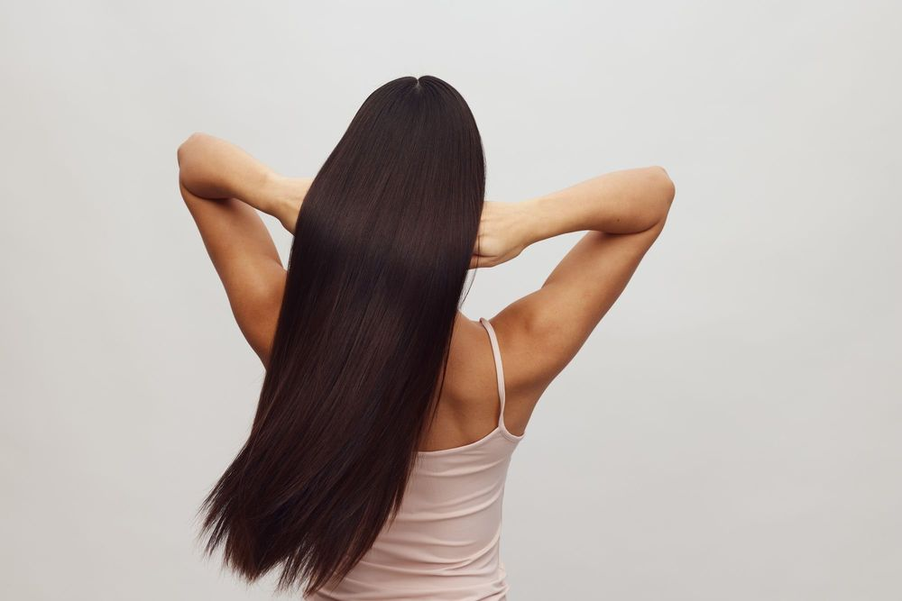
Dark Brown StraightDark and straight. Try a two-tone look.
Sample photos are by Pexels photographers and are used under the Pexels License. See the licences page for credits.
Colour you can direct
- Natural shades, fashion colours, or your own
- Start from a natural shade, go bold with a fashion colour, or pick any colour yourself. The colour keeps the light, shadow and shine of your photo, so it looks like hair and not like paint.
- Solid, ombre, balayage, highlights
- Colour all of the hair, blend one colour into another from roots to ends, add a hand-painted balayage with lighter ends, or add lighter streaks through your colour.
- Two-tone and root shadow
- Split the hair into two colours, or add a darker root that grows into your colour.
- Intensity, shine and brightness
- Go from a soft tint to a bold change, add or remove shine, and lift or deepen the colour.
- Gray cover
- See how colour looks over gray roots and gray hair.
- Finishing touches
- Soften frizz and bring out strand definition. These edits apply to the hair only, not to the rest of your photo.
Lustra is for hair colour only. It does not add a haircut, bangs, curls or a wig.
Compare, refine, keep
Decide with your eyes. Drag the before and after slider, or put several colours side by side in the compare grid.
- Before and after slider on the same photo
- Compare grid: several colours at once, exported as one picture
- Refine brush: add hair the detection missed, or remove colour from the wrong spot
- Hints when a photo may be blurry, dark, very small, or has a hat or scarf over the hair
- A choice of faces when more than one person is in the photo
- Undo and redo for every edit
- Saved looks: keep the colours you love on your device and open them again on another photo
- Save to Photos, save to Files, or share. No watermark
Your photos never leave your device
Lustra has no account and no server that stores your pictures. Hair detection and every colour change are made on your phone or iPad. We do not run analytics of our own.
- You pick photos with the iOS photo picker, so Lustra sees only what you choose
- Saving to your library uses add-only permission
- Hair detection runs on the device with an open model and Apple's face detection
- Saved looks stay on your device and can be deleted in the app
- No account, no sign-in, no subscription
The only outside service is the ad network. The privacy policy explains what it collects.
Free, and paid for by ads
Lustra has no subscription and no in-app purchase. Ads from Google AdMob pay for it, and they appear in two places.
Where you will see ads
- A banner on the Home screen. Never over the editing controls.
- One short rewarded video before each export. You choose whether to watch it, and a comparison grid counts as one export.
When no ad is available
- The export goes ahead for free.
- This happens, for example, when you are offline.
Where the law asks for it, the app shows a consent form from Google before personalised ads, and iOS may ask whether the app may track you. Lustra itself runs no analytics, and the only tracking that can happen is through Google's ad software, and only if you allow it. You can say no to the iOS prompt and still use everything.
Questions
Is Lustra really free?
Yes. There is no subscription, no in-app purchase, no paid version and no watermark. Ads from Google AdMob pay for the app: a banner on the Home screen, and one rewarded video that you choose to watch before you export.
Are my photos uploaded anywhere?
No. Finding the hair, changing the colour and saving the picture all happen on your device. We never receive your photos, and nothing is sent to an online editing service.
Do I need an account?
No. There is no sign-in and no sign-up.
Does Lustra change my haircut or hairstyle?
No. Lustra is for hair colour only: it changes the colour, the colour style and the finish of the hair that is already in your photo. It does not add a haircut, bangs, curls or a wig.
What colours and styles can I try?
Natural shades, fashion colours and a custom colour of your own. For each, you can choose a solid colour, ombre, balayage, highlights, two-tone, or a root shadow. Sliders set the intensity, shine and brightness, and a gray cover option shows colour over gray hair.
How does it find the hair?
Lustra uses a hair detection model and Apple's face detection, both running on your device. If the result misses a strand or adds too much, the refine brush lets you add or remove hair area. Lustra also tells you when a photo may be a problem, for example when it is blurry, dark, very small or has more than one face.
Will the colour look like this in real life?
Lustra shows a preview. Real dye depends on your starting colour, your hair's condition and the light, so treat the preview as inspiration and talk to your hairdresser before you colour your hair.
Why am I asked to watch an ad?
Before you export a picture, the app offers one short video that you choose to watch. One watched ad covers one export, and a comparison grid counts as one export. If you choose Not now, nothing is exported and you can try again any time. If no ad is available, for example when you are offline, the export goes ahead anyway. Editing never needs an ad.
What can I export?
The finished picture, a before and after view, or a comparison grid of several colours. You can save to Photos, save to Files, or share. There is no watermark.
Does it need photo library or camera access?
Not to edit. You pick a photo with the iOS photo picker, and Lustra sees only the ones you choose. To save a result, the app asks for add-only permission, which lets it add pictures and does not let it read your library. The camera is used only if you choose to take a photo.
What happens if I do not allow tracking?
The app works the same. The ads you see will be less personalised. You can change the choice any time in iOS Settings under Privacy and Security, then Tracking. Lustra itself runs no analytics. If you allow tracking, only Google's ad software may use your advertising identifier for ads.
Which devices does it run on?
iPhone and iPad with iOS 17 or iPadOS 17 or later.
When can I download it?
Lustra is not on the App Store yet, so there is no download link. This page will link to the App Store listing once the app is available.
Who makes Lustra?
Ecom Swift LLC, a company registered in Wyoming, United States. You can reach us on the support page.